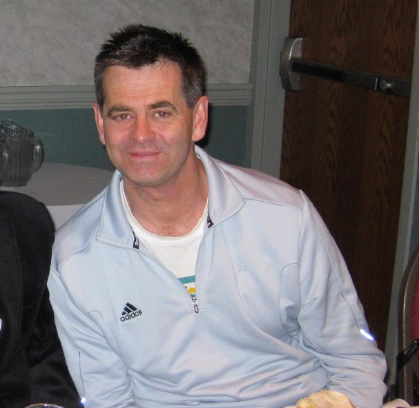
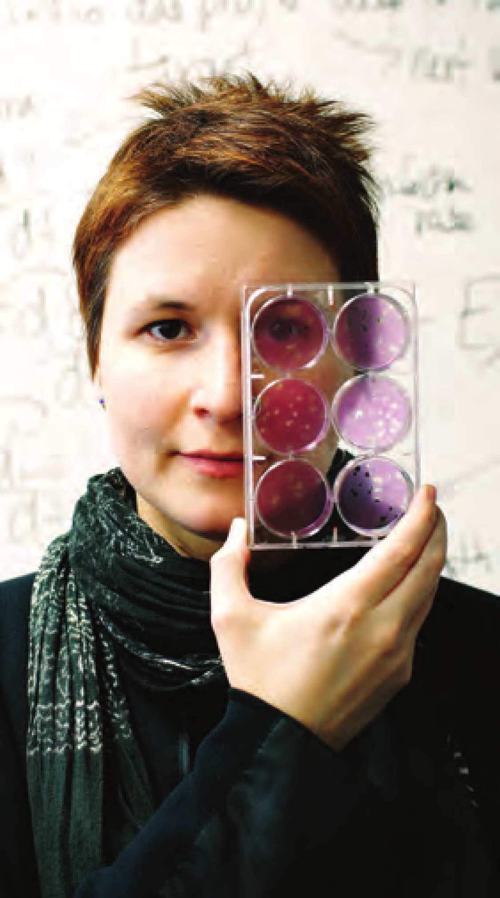

Conférenciers
Notez que la langue dans laquelle l’exposé est donné est à coté du nom de l’orateur.
Tim Swartz, Heinz Bauschke, Donovan Hare, Jennifer Hyndman, Catherine Beauchemin, Dominikus Noll, Gerda de Vries.
To view this page ensure that Adobe Flash Player version 10.0.0 or greater is installed.

Notez que la langue dans laquelle l’exposé est donné est à coté du nom de l’orateur.
Tim Swartz, Heinz Bauschke, Donovan Hare, Jennifer Hyndman, Catherine Beauchemin, Dominikus Noll, Gerda de Vries.
Orateur: Dr. Tim Swartz (Anglais)
Titre: Statistical Excursions in Sport
Resumé: [link]
Heure: 17:00, Mercredi, 11 Juillet, 2012
Location: Fipke 204
Courte Biographie:

Tim Swartz est Professeur au Département de Statistique et des Sciences Actuelles à l’Université de Simon Fraser. Il a complété son doctorat et sa maîtrise en Statistique à l’Université de Toronto et son Baccalauréat en mathématiques à l’Université de Waterloo. Il est l’auteur de 60 publications et de deux livres. Ses intêrets incluent les méthodes et applications Bayésiennes, les inférences statistiques et les statistiques dans les sports. Dans ses temps libres, Dr. Swartz apprécie regarder toutes sortes de sports et y jouer occasionnellement.
Cette courte biographie peut être téléchargée ici.
Orateur: Dr. Heinz H. Bauschke (Anglais)
Titre: An invitation to projection methods
Resumé: [lien]
Heure: 11:30, Jeudi, 12 Juillet, 2012
Location: Fipke 204
Courte Biographie:
 Heinz H. Bauschke Heinz H. Baushke est un Professeur de Mathématiques à l’Université de la Colombie-Britannique, Kelowna, et fait parti du Canada Research Chair (Tier 2) en Analyse convexe et Optimisation.
Heinz H. Bauschke Heinz H. Baushke est un Professeur de Mathématiques à l’Université de la Colombie-Britannique, Kelowna, et fait parti du Canada Research Chair (Tier 2) en Analyse convexe et Optimisation.
Il est né à Frankfurt, oú il a reçut son “Diplom-Mathematiker (mit Auszeichnung)” de Goethe Universität en 1990. Il a défendu sa thèse de de doctorat en Mathématiques à l’Université de Simon Fraser en 1996 et a reçu la Médaille d’or du Gouverneur Général pour ses études supérieures. Après une bourse Postdoctorale du CRSNG passée à l’Université de Waterloo, à l’Université de Pennsylvania et à l’Université de Californie à Santa Barbara, Dr. Bauschke est devenu professeur à l’Okanagan University College en 1998. Il a aussi été chercheur principal pour Workfire et Packeteer, oú son travail sur la compression d’image JPEG l’a conduit à un brevet Américain. Il a rejoint l’Université de Guelph en 2001 et est retourné à Kelowna en 2005 lorsque l’Okanagan University College devînt l’Université de la Colombie Britannique, campus Okanagan à Kelowna (UBCO).
Dr. Bauschke est auteur ou co-auteur de plus de 80 articles sur l’Analyse et l’Optimisation. En collaboration avec Dr. Patrick Combettes, il vient de finir et de publier la monographie de 450+ pages Convex Analysis and Monotone Operator Theory in Hilbert Spaces avec Springer Verlag. Il a également co-édité le livre Fixed-Point Algorithms for Inverse Problems in Science and Enginnering, qui apparaît en 2011 dans les series de Springer Optimization and Its Application. Son travail a été cité plus de 3000 fois. En 2009, il est devenu le Premier Chercheur de l’Année de UBCO.
Cette courte biographie peut être téléchargée ici.
Orateur: Dr. Donovan Hare (Anglais)
Titre: To All the Graphs I've Loved Before
Resumé: [lien]
Heure: 15:30, Jeudi, 12 Juillet, 2012
Location: Fipke 204
Short Biography:
Dr. Donovan Hare répartit son temps en tant que Professeur Adjoint de Mathématiques à l’Université de la Colombie-Britannique, Okanagan et en tant que consultant d’optimisation discrètes pour des industries du Canada et des États-Unis. Il a obtenu un Baccalauréat à l’Université de Victoria en Mathématiques et en Informatique, une Maitrise en Mathématiques à l’Université d’Alberta et un Doctorat en Mathématiques à l’Université de Simon Fraser. Il a travaillé dans les soins de la santé, les services financiers et les industries de production et de transport avec des entreprises telles que le Conseil Médical du Canada, le American Institute of Certified Public Accountants, Educational Testing Services, Ameriquest, Anheuser Busch, Werner Enterprises et ILOG (qui fait maintenant partie d’IBM). Il aime étudier la théorie des graphes et les problèmes de combinatoire, particulièrement si le coloriage en fait partie.
Cette courte biographie peut être téléchargée ici.
Orateur: Dr. Jennifer Hyndman (Anglais)
Titre: Finite Bases of Quasi-equations of Unary Algebras: How Few Rules Can We Get Away With?
Resumé: [lien]
Heure: 11:30, Vendredi, 13 Juillet, 2012
Location: The Centre for Learning Atrium
Courte Biographie:
 Dr. Jennifer Hyndman est une Professeure et directrice du Département de Mathématiques à l’Université de Northern B.C. Elle a complété son doctorat et sa maîtrise à l’Université de Colorado et son baccalauréat à l’Université de Waterloo. Ses intérêts de recherches incluent les algèbres universelles, l'Interprétation des variétés, la théorie de la dualité et les algèbres unaires. Elle est la récipiendaire du prix d'enseignement de la Société mathématique du Canada en 2010, et du UNBC Teaching Excellence Award en 2003.
Dr. Jennifer Hyndman est une Professeure et directrice du Département de Mathématiques à l’Université de Northern B.C. Elle a complété son doctorat et sa maîtrise à l’Université de Colorado et son baccalauréat à l’Université de Waterloo. Ses intérêts de recherches incluent les algèbres universelles, l'Interprétation des variétés, la théorie de la dualité et les algèbres unaires. Elle est la récipiendaire du prix d'enseignement de la Société mathématique du Canada en 2010, et du UNBC Teaching Excellence Award en 2003.
Elle voit les mathématiques partout, même dans les lacets de ses chaussures de danse. Elle équilibre son travail et sa vie en participant régulièrement au Festival de Danse de Prince George.
Cette courte biographie peut être téléchargée ici.
Orateur: Dr. Catherine A.A. Beauchemin (Français)
Titre: Virologie in silico: cultiver des infections en ordinateur
Resumé: [lien]
Heure: 16:30, Vendredi, 13 Juillet, 2012
Location: The Centre for Learning Atrium
Courte Biographie:

Catherine Beauchemin est Professeure associée au département de Physique à l’Université Ryerson. Elle s’intéresse au systèmes , particulièrement en mathématiques et en modélisation mathématique dynamique des maladies infectieuses. Originaire de Montréal, elle obtient son baccalauréat en Physique-Informatique de l’Université d’Ottawa en 2001 après avoir complété son projet de fin d’études en NeuroPhysique sous la supervision de Dr. André Longtin. Elle obtient son doctorat de l’Université de l’Alberta en 2005 sous la supervision du Dr. Jack Tuszynski au département de Physique en travaillant sur la modélisation spatio-temporelle des infections virales. Avant d’enseigner à Ryerson, elle fut stagiaire postdoctorale conjointement au National Laboratory de Los Alamos avec le Dr. Alan S. Perelson et au Adaptive Computation Laboratory du Département d’Informatique de l’Université du Nouveau-Mexique avec Dr. Stephanie Forrest.
Cette courte biographie peut être téléchargée ici.
Orateur: Dr. Dominikus Noll (Anglais)
Titre: On active and passive control
Resumé: [lien]
Heure: 11:30, Samedi, 14 Juillet, 2012
Location: Fipke 204
Courte Biographie:
 Dominikus Noll est Professeur en mathématiques appliquées à L’Université Paul Sabatier, en France. Ses centres d’intérêt incluent les méthodes numériques d’optimisation, les problèmes d’optimisation à grande échelle, la restauration d’images et les problèmes inverses, la tomographie, le contrôle du feedback ainsi que les processus de cristallisation et de précipitation.
Dominikus Noll est Professeur en mathématiques appliquées à L’Université Paul Sabatier, en France. Ses centres d’intérêt incluent les méthodes numériques d’optimisation, les problèmes d’optimisation à grande échelle, la restauration d’images et les problèmes inverses, la tomographie, le contrôle du feedback ainsi que les processus de cristallisation et de précipitation.
Cette courte biographie peut être téléchargée ici.
Orateur: Dr. Gerda de Vries (Anglais)
Titre: The Language of Life: When Mathematics Speaks to Biology
Resumé: [lien]
Heure: 15:30, Samedi, 14 Juillet, 2012
Location: Fipke 204
Courte Biographie:
 Gerda de Vries est Professeure au Département de Mathématiques et de Sciences Statistiques de l’Université de l’Alberta. Son domaine de recherche est la biologie mathématique. L’objectif principal de son programme de recherche est de comprendre et d’expliquer les processus physiologiques à travers le développement et l’analyse de modèles mathématiques.
Gerda de Vries est Professeure au Département de Mathématiques et de Sciences Statistiques de l’Université de l’Alberta. Son domaine de recherche est la biologie mathématique. L’objectif principal de son programme de recherche est de comprendre et d’expliquer les processus physiologiques à travers le développement et l’analyse de modèles mathématiques.
Cette courte biographie peut être téléchargée ici. Le crédit photo va à Creative Eye-mages Photography, 2011.